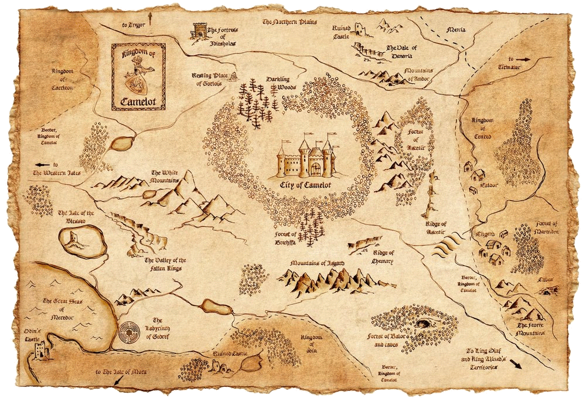

Acasă
Scurt istoric
Galerie foto
Bibliografie
Date de contact
Cavalerii Mesei Rotunde
Excalibur
Merlin
Regele Arthur
Guinevere şi Lancelot
Mordred
Regele Arthur în lumea modernă
Falsul rege Arthur
Dovezi ale existenţei sale
Hartă interactivă - daţi click pe regiuni

Colegiul Naţional "Ion C.Brătianu", Piteşti, judeţ Argeş, România